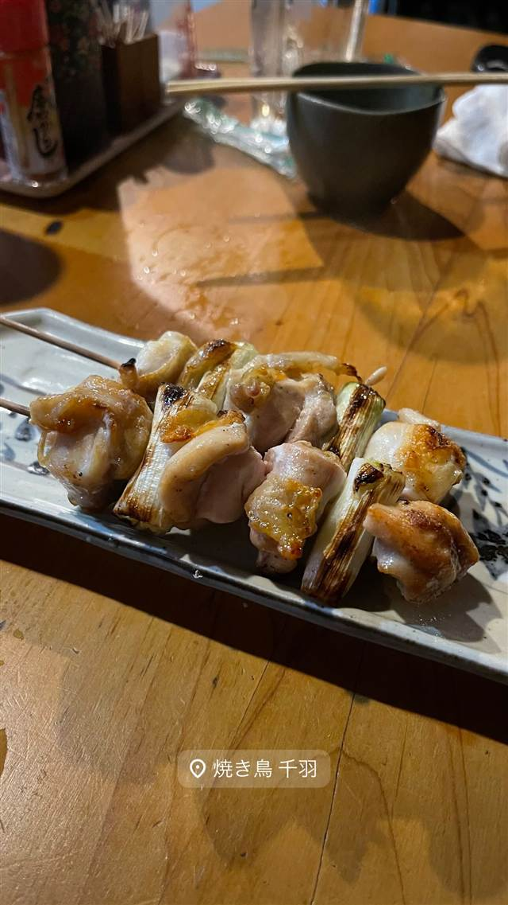

焼き鳥 千羽
40年以上続く老舗、大山どりと名物つくね千羽焼き
焼き鳥 千羽
神泉駅すぐの円山町で40年以上続く焼き鳥店。大山どりを使った串焼きと、店名を冠した名物つくね「千羽焼き」が看板で、大将夫婦の物腰の柔らかな接客も魅力。
TRIVIA
へえ、という話
- 店名を冠した名物つくね「千羽焼き」がある
- 開業45年以上と伝えられる円山町の老舗
| 看板 | 千羽焼き（野菜を混ぜ込んだつくね）、大山どりの串焼き |
|---|---|
| こだわり | 鳥取県産ブランド鶏「大山どり」を使用した串焼き |
| 予算 | 夜 ¥3,000～¥3,999 |
| 定休日 | 不定休 |
| 場所 | 神泉（徒歩1分） 東京都渋谷区円山町 |
| 注意 | 神泉駅から徒歩2分、円山町の落ち着いた雰囲気の老舗焼き鳥店 |
食べたもの：焼き鳥
NEARBY
近い店・同じ系統の店
-
 パスタ 渋谷
KURA 渋谷店
元プロゴルファーら異業種出身者が始めた、もちもち生パスタ50種以上
昼 ¥1,000～¥1,999 夜 ¥2,000～¥2,999
パスタ 渋谷
KURA 渋谷店
元プロゴルファーら異業種出身者が始めた、もちもち生パスタ50種以上
昼 ¥1,000～¥1,999 夜 ¥2,000～¥2,999
-
 うなぎ 渋谷
渋谷マークシティ
昼 ¥2,000～¥3,000 夜 ¥2,000～¥3,000
うなぎ 渋谷
渋谷マークシティ
昼 ¥2,000～¥3,000 夜 ¥2,000～¥3,000
-
 ベトナム 渋谷駅
ミス・サイゴン（MISS SAIGON）
ベトナム人スタッフが作る野菜たっぷりのフォーとバインセオ
夜 ～¥5,999
ベトナム 渋谷駅
ミス・サイゴン（MISS SAIGON）
ベトナム人スタッフが作る野菜たっぷりのフォーとバインセオ
夜 ～¥5,999
-
 台湾 恵比寿
七一飯店
週1回だけの営業だった名残の店名、看板は魯肉飯
昼 ¥1,000～¥1,999 夜 ¥1,000～¥1,999
台湾 恵比寿
七一飯店
週1回だけの営業だった名残の店名、看板は魯肉飯
昼 ¥1,000～¥1,999 夜 ¥1,000～¥1,999
-
 カフェ 渋谷
SUZU CAFE 神南
パティシエ手作りのクリームチーズ入りカスタードプリンが看板
昼 ¥1,000～¥1,999 夜 ¥2,000～¥2,999
カフェ 渋谷
SUZU CAFE 神南
パティシエ手作りのクリームチーズ入りカスタードプリンが看板
昼 ¥1,000～¥1,999 夜 ¥2,000～¥2,999
-
 コーヒー 渋谷
Café Kitsuné Shibuya
パリ発ブランドのカフェ、狐にちなむ名を持つバゲットサンド
昼 ¥1,000～¥1,999 夜 ¥1,000～¥1,999
コーヒー 渋谷
Café Kitsuné Shibuya
パリ発ブランドのカフェ、狐にちなむ名を持つバゲットサンド
昼 ¥1,000～¥1,999 夜 ¥1,000～¥1,999